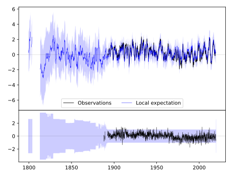
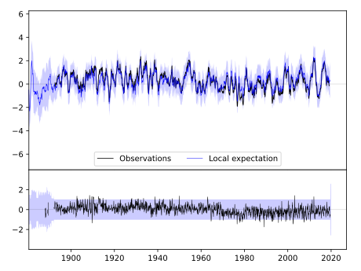
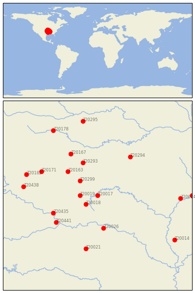

EUREKA SPRINGS 3 WNW [USA]


| Neighbour | Name | Country | Distance | Lon/Lat | Years |
|---|
| 720017 | EUREKA SPRINGS 3 WNW | USA | 0 | -93.8, 36.4 | 1888-2019 |
| 720018 | FAYETTEVILLE EXP STN | USA | 48 | -94.2, 36.1 | 1881-2019 |
| 720019 | GRAVETTE | USA | 53 | -94.4, 36.4 | 1892-2019 |
| 720299 | NEOSHO | USA | 77 | -94.4, 36.9 | 1878-2019 |
| 720026 | SUBIACO | USA | 123 | -93.6, 35.3 | 1884-2019 |
| 720163 | COLUMBUS | USA | 125 | -94.8, 37.2 | 1891-2019 |
| 720293 | LAMAR | USA | 130 | -94.3, 37.5 | 1885-2019 |
| 720435 | MUSKOGEE | USA | 150 | -95.3, 35.8 | 1892-2019 |
| 720441 | WEBBERS FALLS 5 WSW | USA | 160 | -95.2, 35.5 | 1892-2019 |
| 720294 | LEBANON 2W | USA | 174 | -92.7, 37.7 | 1890-2019 |
| 720167 | FT SCOTT | USA | 174 | -94.7, 37.8 | 1843-2019 |
| 720171 | INDEPENDENCE | USA | 191 | -95.7, 37.2 | 1872-2019 |
| 720021 | MENA | USA | 203 | -94.2, 34.6 | 1889-2019 |
| 720438 | PAWHUSKA | USA | 225 | -96.3, 36.7 | 1893-2019 |
| 720182 | SEDAN | USA | 227 | -96.2, 37.1 | 1885-2019 |
| 720024 | POCAHONTAS 1 | USA | 251 | -91.0, 36.3 | 1889-2019 |
| 720178 | OTTAWA | USA | 278 | -95.3, 38.6 | 1893-2019 |
| 720295 | LEES SUMMIT REED WR | USA | 281 | -94.3, 38.9 | 1863-2019 |
| 720016 | CORNING | USA | 286 | -90.6, 36.4 | 1891-2019 |
| 720014 | BRINKLEY | USA | 288 | -91.2, 34.9 | 1883-2019 |